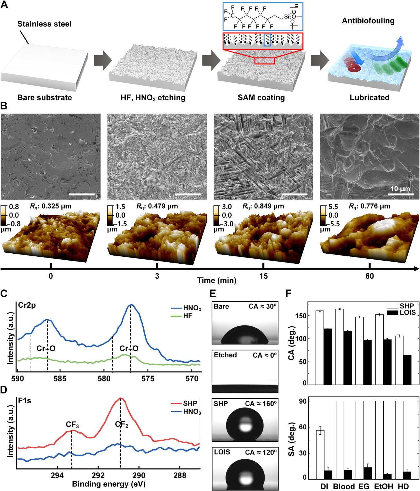

연구 배경과 분류
정형외과 고정물에 윤활 계면을 형성해 세균 부착, 감염 관련 염증 및 골 치유를 함께 평가한다. 장치 표면에 대한 생물학적 반응을 다루므로 숙주 상호작용에 배치했다.
정형외과 고정물의 오염과 표면 손상
정형외과 고정물은 수술 취급 중 표면이 손상될 수 있습니다. LOIS는 부착 억제 기능을 이런 기계적 조건과 함께 평가합니다. 처음 제작한 표면이 잘 반발하더라도 고정물을 구부리고 다루는 과정에서 계면이 달라질 수 있습니다. 이 연구의 관심은 초기 표면 특성에서 멈추지 않고 수술 취급과 오염된 이식 환경으로 이어집니다.
핵심 접근과 발전
미세·나노 구조에 윤활액을 유지하여 표면 접촉을 줄입니다. 공기층 기반 초소수성 대조군과 비교하면 손상 뒤 계면 유지의 역할이 드러납니다. 윤활 계면의 낮은 부착성과 표면 구조의 유지가 함께 작동하는 설계입니다. 세균을 죽이는 약물의 작용과 달리 물질이 표면에 자리 잡는 과정을 줄이려는 접근이므로, 항감염이라는 표현도 이 기전과 실제 모델에 맞춰 읽어야 합니다.

LOIS의 표면 처리 단계와 미세구조·표면 화학·액체 젖음 특성을 보여 주는 논문 원그림입니다. A는 제작 과정, B는 SEM·AFM 관찰, C–D는 XPS 분석, E–F는 액적 관찰과 접촉각·미끄럼각 비교입니다.
Kyomin Chae, Woo Young Jang, Kijun Park 외. “Antibacterial infection and immune-evasive coating for orthopedic implants”. Figure 2. DOI: 10.1126/sciadv.abb0025. © 2020 The Authors. CC BY-NC 4.0. 출처: NLM/PMC 공개 논문 데이터셋. PDF 원이미지 객체를 PNG로 추출했으며 크기·패널·라벨을 변경하지 않았습니다.
원그림과 원문 설명 ↗ · DOI: 10.1126/sciadv.abb0025 ↗ · CC BY-NC 4.0 ↗
비상업적 학술 이용에 한해 저자·출처·라이선스 및 변경 여부를 표시하여 사용할 수 있습니다.
평가 방법과 조건
세균 배양액에 미리 노출한 고정물을 토끼 골절 부위에 넣고, 오염된 맨 표면·초소수성 표면과 비교했습니다. 멸균 맨 표면은 감염이 없는 치유의 기준이므로 이 대조군을 구별해야 합니다. 조직 염색은 감염 관련 손상을 살피고, 영상과 가골 분석은 골절 회복을 평가합니다. 오염된 대조군과의 차이뿐 아니라 감염이 없는 기준과의 비교가 있어야 코팅이 치유를 방해하는지에 관한 질문도 다룰 수 있습니다.
주요 결과
오염된 맨 표면에서는 농양·괴사와 적은 가골 형성이 관찰된 반면, LOIS는 감염 소견 감소와 가골 형성을 보였습니다. 재료의 부착 억제를 해당 모델의 염증·골 회복과 연결하는 결과이며 직접 살균의 증거는 아닙니다. 골 치유 관찰은 표면의 부착 억제가 실제 고정물 환경에서도 의미가 있는지 살피는 단계입니다. 그렇더라도 더 많은 가골이나 낮은 염증을 곧바로 모든 조건에서 우수한 골 유착으로 바꾸어 해석해서는 안 됩니다.
한계와 남은 질문
이식 전 오염 모델은 모든 감염 경로를 대표하지 않습니다. 저자는 이식 후 감염과 골유도 세포의 선택적 부착을 후속 과제로 제시합니다. 세균이 이미 표면에 자리 잡는 상황을 겨냥한 실험과 수술 뒤 다른 경로로 감염이 들어오는 상황은 다릅니다. 또한 비선택적 부착 억제와 골 관련 세포의 바람직한 접촉 사이의 균형은 별도로 검증해야 합니다.
관련 외부 연구
Bioinspired self-repairing slippery surfaces with pressure-stable omniphobicity
SLIPS의 액체 반발과 LOIS의 이식 감염·숙주 반응을 구분한다.
액체 반발 시험은 이식 감염·골 유착 평가를 대신하지 않는다. 외부 전문은 미검토이며 임상적 우열 비교는 하지 않는다.
초록 확인교신저자 확인
서정목 교신 확인아래는 서정목의 교신저자 여부에 관한 확인 기록입니다. 저자 순서나 별표만으로 판정하지 않으며, 본문 내용 검증과 별도로 읽어야 합니다.
- 교신 고지 확인 출처 ↗
Corresponding author. Email: [email] (J.S.); [email] (S.H.L.)
contrib/xref[@ref-type="corresp"] → cor1; author-notes · public_repository_xml_author_and_correspondence_read
- 본문 확인 범위
- 공개 PMC 본문의 Results, Figures 3–6, 향후 감염 모델·골형성 세포 연구를 포함한 Discussion 및 Materials and Methods를 읽었습니다. 추가 본문 확인은 Figures 5C–G와 6B–F에 대응하는 결과 문단, 사전 배양 모델과 무코팅 음성·양성 대조군입니다. 뼈 관찰은 정성적으로 요약했으며, 출처 후반 문장의 무코팅 양성·음성 대조군 표기가 일관되지 않은 부분은 채택하지 않았습니다. 추가 확인은 보충자료(SI) 읽기를 뜻하지 않습니다.
- 보충자료 확인 범위
- 보충자료(SI)는 읽지 않았습니다. 확인된 보충자료 범위는 비어 있으며, SI 전체 검토를 완료한 것으로 표시하지 않습니다.
- 남은 확인
- SI는 읽지 않았으며 최신 출판사 판본의 직접 대조는 남아 있습니다. 윤활액 잔존 정량·동물 배정 세부·이식 후 감염 결과를 추가 검증 없이 주장하지 않습니다.
COVERAGE & OUTREACH
보도와 소개
논문과의 연관성을 확인한 소개 자료입니다. 언론 게재는 독립 취재나 실험 결과의 추가 검증을 뜻하지 않습니다.
임플란트 세균 감염 줄이는 코팅 기술 개발 ↗
서정목·장우영 연구팀, 윤활 코팅, 토끼 삽입 실험 및 Science Advances를 대조했습니다. #57의 정형외과 삽입물 연구와 일치합니다.
본문 확인 공개 HTML의 실제 기사 본문과 2020-10-29 03:00 게시 정보를 읽었습니다. 한국연구재단 발표 기반 보도입니다. 치과 임플란트 일반 설명을 논문의 임상 검증으로 확장하지 않습니다.
BLISS 채교민 & 박기준 학생 삽입형 소재의 수술 후 감염 억제를 위한 고기능성 표면 개질 기술 연구 Science Advances 게재 승인 ↗
공개 공지 제목의 채교민·박기준, Science Advances 및 삽입물 수술 후 감염 억제 표면 개질이 #57의 연구자·연구 내용과 일치합니다.
부분 본문 확인 공개 뉴스 JSON의 해당 공지 제목과 날짜을 읽었습니다(공지 키: lois-2). 추가 이미지 본문은 읽지 않았습니다. 연구실 자체 공지이며 출판사의 별도 확인과 구분합니다.
Device–tissue interfaces: prior studies, ELFS biliary stents and FLUID ureteral stents ↗
게시물은 정형외과 임플란트의 감염·면역 반응을 다룬 선행 연구를 소개합니다. 검증 기록에 기재된 본문 단축 링크의 DOI 10.1126/sciadv.abb0025는 공개 101편 목록의 #57 제목·DOI와 일치합니다.
본문 확인 로그인 세션에서 본문, 공개범위 ‘전 세계’와 단축 링크 6개의 DOI 목적지를 확인한 검증 기록에 근거합니다. 발행일은 2026-10-03 22:37 KST 확인 당시 ‘4시간’ 표시로 판정했으며 정확한 발행 시각은 미확인입니다. DOI 목적지는 LinkedIn 외부 링크 안내 화면에서 확인되었으며 출판사 본문을 새로 검토한 기록은 아닙니다. 연구자 자기작성 홍보이며 독립 취재나 실험 결과의 추가 검증을 뜻하지 않습니다.
근거와 확인 범위
공개 PMC 본문의 Results, Figures 3–6, 향후 감염 모델·골형성 세포 연구를 포함한 Discussion 및 Materials and Methods를 읽었습니다. 추가 본문 확인은 Figures 5C–G와 6B–F에 대응하는 결과 문단, 사전 배양 모델과 무코팅 음성·양성 대조군입니다. 뼈 관찰은 정성적으로 요약했으며, 출처 후반 문장의 무코팅 양성·음성 대조군 표기가 일관되지 않은 부분은 채택하지 않았습니다. 추가 확인은 보충자료(SI) 읽기를 뜻하지 않습니다.
추가 해설은 아래에 명시한 근거 범위에서 편집 검토를 승인한 내용입니다. 모든 본문·보충자료의 검증 완료를 뜻하지 않습니다.
- 추가 본문 확인 범위
- 공개 PMC 본문의 Results, Figures 3–6, 향후 감염 모델·골형성 세포 연구를 포함한 Discussion 및 Materials and Methods를 읽었습니다. 추가 본문 확인은 Figures 5C–G와 6B–F에 대응하는 결과 문단, 사전 배양 모델과 무코팅 음성·양성 대조군입니다. 뼈 관찰은 정성적으로 요약했으며, 출처 후반 문장의 무코팅 양성·음성 대조군 표기가 일관되지 않은 부분은 채택하지 않았습니다. 추가 확인은 보충자료(SI) 읽기를 뜻하지 않습니다.
- 추가 보충자료 확인 범위
- 보충자료(SI)는 읽지 않았습니다. 확인된 보충자료 범위는 비어 있으며, SI 전체 검토를 완료한 것으로 표시하지 않습니다.
- 원본 공개 논문 목록 ↗ · #57 · 2026-10-03
- Crossref metadata ↗: 이 Crossref 항목은 공개 서지 메타데이터 대조 기록입니다. 초록·본문·보충자료의 실제 열람 범위는 이 페이지의 별도 근거 기록에 명시하며, 서지 대조만으로 전문 열람이나 본문·보충자료 전체 검증 완료를 판정하지 않습니다. license_urls는 등록된 링크 목록이며 본문·그림 재배포 허가를 의미하지 않습니다. TDM 또는 게시 정책 링크가 포함될 수 있습니다.
- Antibacterial infection and immune-evasive coating for orthopedic implants ↗
public_web_full_text · Results and Figs. 3-6: biofouling, mechanical robustness and rabbit bone healing; Discussion, especially final paragraph on future infection model and osteoinduction; Materials and Methods. DOI 10.1126/sciadv.abb0025. Checked 2026-10-03. - Antibacterial infection and immune-evasive coating for orthopedic implants ↗
public_repository_full_text · Results, paragraphs accompanying Figs. 5C–G and 6B–F; preincubation model and bare-negative/positive controls. Bone observations are summarized qualitatively; inconsistent bare-positive/negative wording in late source sentences is not adopted. - Antibacterial infection and immune-evasive coating for orthopedic implants ↗
independent_reviewer_selected_main_text · Results selected preincubation, Fig.5 infection and Fig.6 callus paragraphs; Discussion future models. - 추가 해설의 근거 ↗
연구 배경 · Results and Figs. 3-6: biofouling, mechanical robustness and rabbit bone healing; Discussion, especially final paragraph on future infection model and osteoinduction; Materials and Methods. DOI 10.1126/sciadv.abb0025. Checked 2026-10-03. · public_web_full_text - 추가 해설의 근거 ↗
핵심 접근과 발전 · Results and Figs. 3-6: biofouling, mechanical robustness and rabbit bone healing; Discussion, especially final paragraph on future infection model and osteoinduction; Materials and Methods. DOI 10.1126/sciadv.abb0025. Checked 2026-10-03. · public_web_full_text - 추가 해설의 근거 ↗
한계와 남은 질문 · Results and Figs. 3-6: biofouling, mechanical robustness and rabbit bone healing; Discussion, especially final paragraph on future infection model and osteoinduction; Materials and Methods. DOI 10.1126/sciadv.abb0025. Checked 2026-10-03. · public_web_full_text - 추가 해설의 근거 ↗
관련 연구와의 연결 · Bioinspired self-repairing slippery surfaces with pressure-stable omniphobicity; DOI 10.1038/nature10447; previously verified abstract · abstract - 추가 해설의 근거 ↗
평가 방법과 조건 · Results, paragraphs accompanying Figs. 5C–G and 6B–F; preincubation model and bare-negative/positive controls. Bone observations are summarized qualitatively; inconsistent bare-positive/negative wording in late source sentences is not adopted. · public_repository_full_text - 추가 해설의 근거 ↗
주요 결과 · Results, paragraphs accompanying Figs. 5C–G and 6B–F; preincubation model and bare-negative/positive controls. Bone observations are summarized qualitatively; inconsistent bare-positive/negative wording in late source sentences is not adopted. · public_repository_full_text